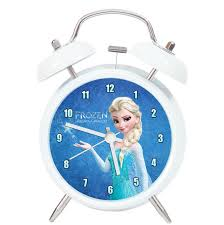

Mocking Time Writing tests that rely on the now
When writing good and meaningful unit tests, we often run into a recurring problem: testing that something has happened on a specific time or that the current time was recorded correctly. This often leads to unit tests being time dependent, which can lead to a number of problems: the expected test result varies according to exact moment the test is being executed on. Also the given and expected time might show a minor (one or more milliseconds) difference due to test execution time.
 © Salvador Dali - Persistence of Memory
© Salvador Dali - Persistence of Memory
The 'now' problem
Imagine that we have a command handler service MarkInvoiceAsPayedCommandHandler
(see Command Pattern for more information on the
Command design pattern and command handlers) which marks an invoice as payed and registers the time
at which the given invoice was payed. The command handler could look like this in PHP:
class MarkInvoiceAsPayedCommandHandler implements CommandHandler
{
private $invoiceRepository;
public function __construct(InvoiceRepository $invoiceRepository)
{
$this->invoiceRepository = $invoiceRepository;
}
public function handle(MarkInvoiceAsPayed $command)
{
$invoice = $this->invoiceRepository->find($command->getInvoiceId());
$invoice->markAsPayed(new DateTimeImmutable('now'));
}
}
We could test this service / unit by mocking a MarkInvoiceAsPayed command and
asserting that the time being stored in the invoice entity equals 'now'. The drawbacks to this approach
are:
- The expected test result needs to be generated with PHP as it changes depending on the time of execution of the test.
- The generated expected test result may differ from the actual time being recorded due to test execution duration.
Time as a service
An elegant and clean solution to this problem can be found in thinking of time as a service deliverable. And what provides time in our world ? Right: clocks. A Clock can be a service which we can inject and consult to provide ous with the current time - or any given time that we mock for testing puposes.
interface Clock {
public function getCurrentDateTime(): DateTimeInterface;
}
Which we can implement as a SystemClock which provides the current (server)
time:
class SystemClock implements Clock {
public function getCurrentDateTime(): DateTimeInterface
{
return new DateTimeImmutable('now');
}
}
But also as a FrozenClock which we can use to mock a certain moment in time for
testing
purposes:
class FrozenClock implements Clock {
private $frozenOn;
public function __construct(DateTimeInterface $frozenOn)
{
$this->frozenOn = $frozenOn
}
public function getCurrentDateTime(): DateTimeInterface
{
return $this->frozenOn;
}
}
Our command handler will now use an injected Clock as follows:
class MarkInvoiceAsPayedCommandHandler implements CommandHandler
{
private $invoiceRepository;
private $clock;
public function __construct(InvoiceRepository $invoiceRepository, Clock $clock)
{
$this->invoiceRepository = $invoiceRepository;
$this->clock = $clock;
}
public function handle(MarkInvoiceAsPayed $command)
{
$invoice = $this->invoiceRepository->find($command->getInvoiceId());
$invoice->markAsPayed($this->clock->getCurrentDateTime());
}
}
making it testable by injecting a FrozenClock and asserting that the time
recorded in the
entity is the same as the time one the FrozenClock
class MarkInvoiceAsPayedCommandHandlerTest
{
public function test_should_handle_a_MarkInvoiceAsPayed_command()
{
// given
$invoiceRepository = new InvoiceRepository();
$frozenClock = new FrozenClock(new DateTimeImmutable('2016-08-19 10:00:00'));
$commandHandler = new MarkInvoiceAsPayedCommandHandler($invoiceRepository, $frozenClock);
// when
$commandHandler->handle($markInvoiceAsPayed);
// then
$this->assertTrue($invoice->isPayed());
$this->assertEquals($frozenClock->getCurrentDateTime(), $invoice->getPayedOn());
}
}
Moving things forward

But it doesn't stop there. The power of this solution stretches out even further. Now that we can
manipulate time in a test, we can use this power to test for (state) changes that should happen in the
future.
To apply this to our invoice example, we will introduce the concept of an overdue invoice. An invoice is
overdue when it has not been payed for 30 days. By adding a few time manipulation setters to our FrozenClock,
we can now time travel as if we had our own DeLorean.
class FrozenClock implements Clock {
...
public function freezeOn(DateTimeInterface $frozenOn)
{
$this->frozenOn = $frozenOn
}
}
public function test_should_throw_when_invoice_is_overdue()
{
// given
$frozenClock = new FrozenClock(new DateTimeImmutable('2016-08-19 10:00:00'));
$invoice = Invoice::createOn($frozenClock->getCurrentDateTime());
$invoiceRepository = new InvoiceRepository();
$invoiceRepository->add($invoice);
$commandHandler = new MarkInvoiceAsPayedCommandHandler($invoiceRepository, $frozenClock);
// when
$frozenClock->freezeOn(new DateTimeImmutable('2016-09-20 10:00:00'));
$commandHandler->handle($markInvoiceAsPayed);
// then
$this->setExpectedException(InvoiceIsOverdue::class);
}